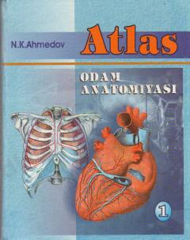

OAInson anatomiyasi bo'yicha tibbiyot o'quvchilari uchun mo'ljallangan ilmiy atlas.
Ushbu atlas inson anatomiyasini o'rganish uchun mo'ljallangan bo'lib, suyaklar, muskullar va ichki a'zolar tuzilishini qamrab oladi. Kitob tibbiyot yo'nalishidagi akademik litsey va kasb-hunar kollejlari o'quvchilari hamda oliy o'quv yurti talabalari uchun tavsiya etilgan.